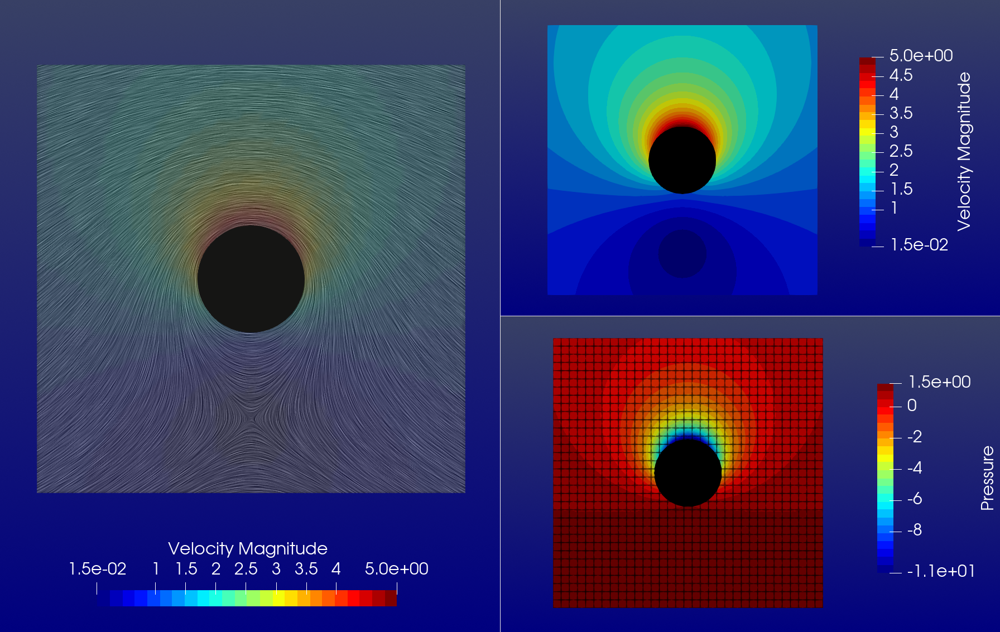

ImmersedPotentialFlowModule
This module implements an immersed Galerkin discretization of the Potential flow with (non)homogenous Dirichlet and Neumann boundary conditions.

./examples/immersed_potentialflow/rotating_cylinder.jl

./examples/immersed_potentialflow/torus.jl
Index
Taiga.ImmersedPotentialFlowModule.ImmersedPotentialFlow — Type
ImmersedPotentialFlow{Dim, T, M <: GeometricMapping{Dim}, V <: ScalarSplineSpace{Dim, T}, W <: Field{Dim}}Immersed Galerkin formulation of potential flow. The solution field can be either velocity potential or stream function.
Fields:
F::M: geometric mappingS::V: constrained solution spaceΔ::Partition{Dim, T}: partitionuʰ::W: solution fieldūʰ::W: function satisfying Dirichlet boundary conditiont::Function: traction vectorϕ::AlgoimCallLevelSetFunction: level set function
Taiga.ImmersedPotentialFlowModule.LinearOperator — Type
LinearOperator{Dim, T, S <: SparseMatrixCSC{T}, M <: AbstractMatrix{T}, V <: AbstractVector{T}}Linear operator for ImmersedPotentialFlow model.
Fields:
C::S: sparse extraction operatorE::S: sparse extension operatorK::M: sparse stiffness matrixL::S: sparse linear operatorEᵀ Cᵀ K C Eb::V: right hand side vector
Taiga.ImmersedPotentialFlowModule.Pressure — Type
Pressure{Dim, T1, T2 <: Velocity{Dim}}Pressure mapping for uniform far field flow.
Fields:
ρ::T1: densityp::T1: far field pressureU::T1: far field velocity magnitudevelocity::T2: velocity field
Taiga.ImmersedPotentialFlowModule.PrimaryField — Type
abstract type PrimaryField endPrimary field indicator.
Taiga.ImmersedPotentialFlowModule.PullbackBody — Type
PullbackBody{Dim, T <: GeometricMapping{Dim}}Pullback of bilinear form.
Fields:
mapping::T: geometric mapping
Taiga.ImmersedPotentialFlowModule.PullbackBoundary — Type
PullbackBoundary{Dim, T <: GeometricMapping{Dim}}Pullback of linear form.
Fields:
mapping::T: geometric mappingtraction::Function: traction vectorside::Int: side restriction (side <= 2Dim)
Taiga.ImmersedPotentialFlowModule.StreamFunction — Type
StreamFunction <: PrimaryFieldStream function primary field.
Taiga.ImmersedPotentialFlowModule.Velocity — Type
Velocity{Dim, F <: PrimaryField, T1 <: GeometricMapping{Dim}, T2 <: Field{Dim}}Velocity mapping. Supports potential as velocity potential or stream function.
Fields:
mapping::T1: geometric mappingpotential::T2: potential
Taiga.ImmersedPotentialFlowModule.VelocityPotential — Type
VelocityPotential <: PrimaryFieldVelocity potential primary field.
SparseArrays.sparse — Method
SparseArrays.sparse(L::LinearOperator)Get sparse linear operator.
Taiga.ImmersedPotentialFlowModule.assemble_body — Method
assemble_body(acc::ElementAccessor{Dim}, acc_immersed::ElementAccessor{Dim}, partition::Partition{Dim}, pullback::PullbackBody{Dim}, ϕ::AlgoimCallLevelSetFunction; show_progress::Bool = true)Assemble unconstrained stiffness matrix.
Arguments:
acc: element accessoracc_immersed: immersed element accessorpartition: partitionpullback: bilinear form pullbackϕ: level set functionshow_progress: boolean flag for formation progress bar
Taiga.ImmersedPotentialFlowModule.assemble_boundary — Method
assemble_boundary(acc::ElementAccessor{Dim}, acc_immersed::ElementAccessor{Dim}, partition::Partition{Dim, T}, pullbacks_boundary::NTuple{N, PullbackBoundary{M}}, ϕ::AlgoimCallLevelSetFunction)Assemble right hand side vector.
Arguments:
acc: element accessoracc_immersed: immersed element accessorpartition: partitionpullbacks_boundary: tuple of2Dimlinear form pullbacks restricted to each boundaryϕ: level set function
Taiga.ImmersedPotentialFlowModule.embedding — Method
embedding(width::T, height::T, depth::T)Return Cartesian background mapping.
Taiga.ImmersedPotentialFlowModule.embedding — Method
embedding(width::T, height::T)Return Cartesian background mapping.
Taiga.apply_particular_solution — Method
Taiga.apply_particular_solution(L::LinearOperator, model::ImmersedPotentialFlow, x₀::V)Return particular solution.
Arguments:
L: linear operatormodel: modelx₀: homogeneous solution
Taiga.forcing! — Method
Taiga.forcing!(b::AbstractVector, L::LinearOperator, model::ImmersedPotentialFlow)Update forcing vector.
Arguments:
b: cache vectorL: linear operatormodel: model
Taiga.forcing — Method
Taiga.forcing(L::LinearOperator, model::ImmersedPotentialFlow)Return foring vector.
Taiga.linear_operator — Method
Taiga.linear_operator(model::ImmersedPotentialFlow; show_progress::Bool = true)Construct linear operator.